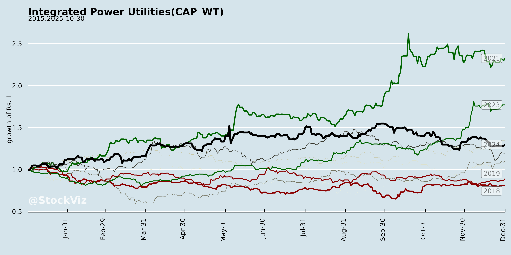
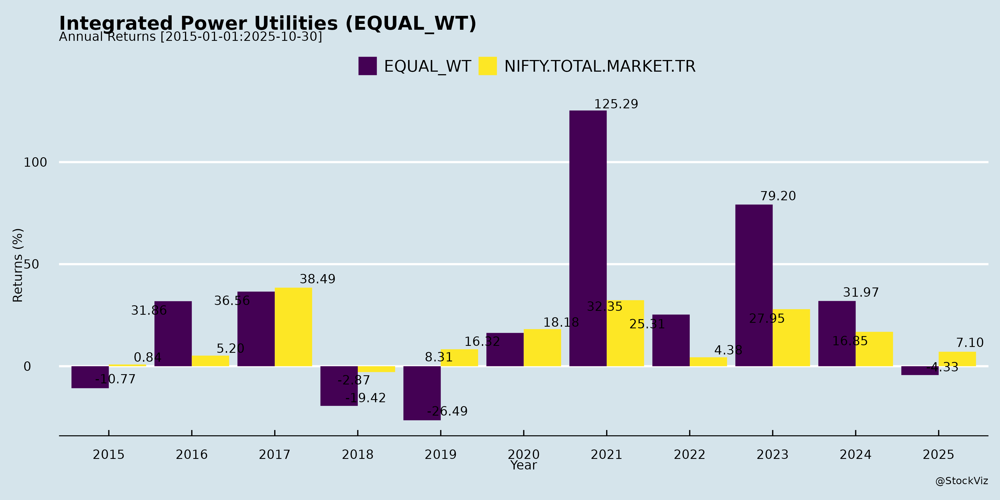
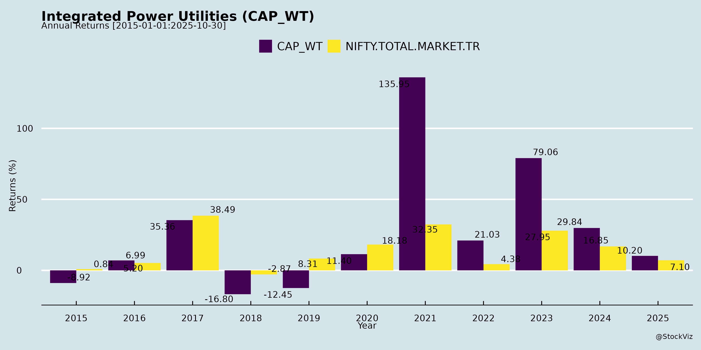
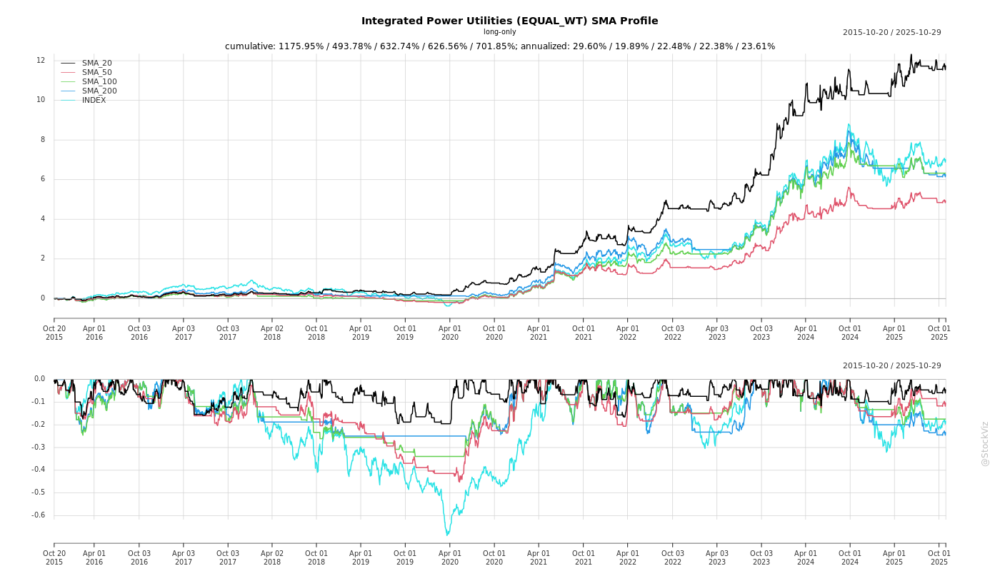
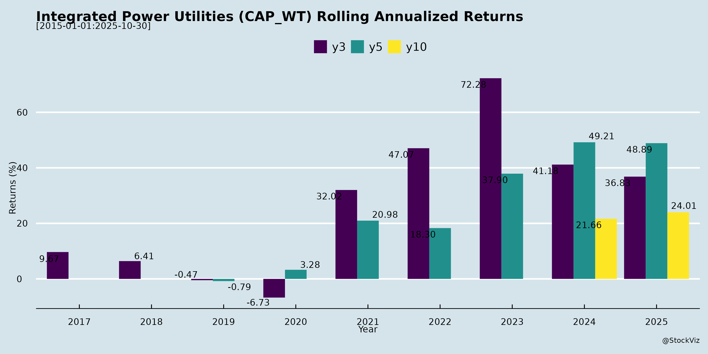

asof: 2025-11-30
Analysis of Indian Integrated Power Utilities (Adani Power, Tata Power, Torrent Power, CESC)
Based on the provided documents (primarily Tata Power’s detailed Q2/H1 FY26 earnings transcript, supplemented by investor meeting intimations from all companies), here’s a structured analysis for these key players in India’s integrated power sector (spanning generation, renewables, distribution, and manufacturing). The sector shows resilience amid monsoon impacts but strong execution focus. Tata Power provides the most granular insights; others signal proactive investor engagement via conferences/roadshows.
Tailwinds (Positive Drivers)
Headwinds (Challenges)
Growth Prospects
| Area | Key Highlights | Outlook |
|---|---|---|
| Renewables | Tata: 1.3 GW H2 addition (total ~7 GW operating by FY26-end); 5.8 GW pipeline (all PPAs tied); rooftop to scale to 5 cr homes nationally. | 2-2.5 GW/year; hybrid/RTC/pumped storage (2029 ops); backward integration (10 GW ingot/wafer plant, FY27+). |
| Generation | Bhutan hydro (1,125 MW Dorjilung, Rs.13,000 cr CAPEX, 40% stake, Rs.1,500-1,600 cr equity); Mundra resolution for 4 GW. | Thermal bids (Greenfield/Brownfield); Sec.11 revival FY27. |
| Distribution | Odisha template (sustainable PAT trajectory); UP/Delhi bids; parallel licenses. | PPP expansion; discom bailout to unlock ops. |
| Manufacturing/EPC | Solar cell/module PAT surge; 10 GW ingot/wafer (PLI/state subsidies). | 50-60 GW national need; export/third-party sales. |
| Overall Capex | Rs.17,500 cr balance FY26 (~60% RE/transmission/pumped storage). | FY27+ targets intact despite H1 slippage. |
Key Risks
Summary: Strong tailwinds from RE/manufacturing/distribution scale-up and healthy balance sheets outweigh monsoon-led headwinds. Growth is anchored in 7+ GW RE ops FY26, backward integration, and discom turnarounds (Odisha as template), with FY26 PAT/EBITDA trajectory robust despite Mundra drag (resolution imminent). Risks center on execution/debt, but proactive investor outreach (Singapore/Mumbai events) signals confidence. Sector poised for 15-20%+ PAT CAGR if capex delivers.
asof: 2025-11-30
Analysis of Indian Integrated Power Utilities Sector
Based on Q3 FY25 (ended Dec 31, 2024) financial results of key players: Adani Power (generation-focused), Tata Power, Torrent Power, CESC, Reliance Infrastructure (RInfra), and India Power (DPSC). These represent a mix of integrated utilities (gen-trans-dist) and generation-heavy firms. Sector shows resilience amid regulatory tailwinds but faces debt, fuel, and litigation pressures.
Tailwinds (Positive Drivers)
Headwinds (Challenges)
Growth Prospects
Key Risks
| Risk Category | Details | Impact (High/Med/Low) |
|---|---|---|
| Regulatory | Tariff disputes, LPSC (RInfra ₹12k Cr), true-ups (CESC DERC); SEBI probes (Adani). | High (Cash flow erosion) |
| Liquidity/Debt | High leverage (RInfra debt svc ratio -0.13); Going concern flags (RInfra subs net worth erosion, NPAs). | High (Default risk) |
| Fuel/Commodity | Gas/coal volatility (Adani/Torrent DGEN idle); Import dependence. | Med-High |
| Litigation/Arbitration | 20+ cases (RInfra toll roads, HKTR termination; Torrent NHAI). | High (₹5k+ Cr at stake) |
| Execution | Project delays (Adani Godda, RInfra defence); Impairments (RInfra EPC exposure). | Med |
| Macro | Discom dues, monsoon variability; Hindenburg overhang (Adani). | Med |
Overall Outlook: Sector buoyant on RE transition/govt support (EBITDA margins 15-20%), but integrated players face discom/regulatory drag. Adani/Torrent outperform; RInfra turnaround-dependent. FY25 PAT growth ~25% possible with settlements; monitor debt resolution. Rating: Positive with Caution.
asof: 2025-11-30
Summary Analysis: Indian Integrated Power Utilities (Based on Provided Filings)
The filings highlight activities from key players like Adani Power, Tata Power, CESC, Torrent Power, Reliance Infrastructure, and India Power Corporation, focusing on hydro expansions in Bhutan, renewables growth, financial performance, and regulatory matters. Below is an analysis of headwinds, tailwinds, growth prospects, and key risks for the sector.
Tailwinds (Positive Factors)
Headwinds (Challenges)
Growth Prospects
Key Risks
Overall Outlook: Strong tailwinds from renewables/hydro drive 10-15% CAGR potential, led by CESC/Adani/Tata. Headwinds like regulation manageable but capex risks loom. Sector poised for growth if execution holds, with clean energy as key differentiator. Monitor Q3 FY26 earnings for validation.
asof: 2025-11-30
Indian Integrated Power Utilities (e.g., Tata Power, Adani Power, Torrent Power, CESC) operate across generation (thermal, renewables), transmission, distribution, and emerging solar manufacturing. They benefit from India’s power demand surge (projected 6% CAGR to FY32E) but face execution and regulatory challenges. Insights drawn from recent filings: Tata Power’s Q2/H1 FY26 earnings call (strong execution amid weather headwinds), Adani Power/Torrent Power investor meets, and CESC’s investor presentation (RE/distribution focus). Below is a structured analysis.
| Company | FY26 Capex (₹ Cr) | RE Target | Key Growth Driver |
|---|---|---|---|
| Tata Power | 25,000 | 7GW+ operating | Solar mfg., discoms, hydro |
| CESC | 35,000+ | 3.2GW FY29 | Hybrid RE, UP privatization, solar mfg. |
| Torrent/Adani | N/A (events) | N/A | Investor focus implies expansion |
Bullish Outlook with Managed Risks: Tailwinds from demand (6% CAGR), RE mandates, and privatization outweigh headwinds like weather/debt. Growth anchored in RE (20-30% portfolio mix), manufacturing (PLI/DCR), and discoms (e.g., UP ₹29k Cr opp.); PAT 2x potential by 2030. Risks center on execution (monitor Q3/Q4 additions) and leverage (stay <4x). Sector poised for 10-15% revenue CAGR FY26-30, led by Tata/CESC integration; ESG strength (e.g., CESC 100% ash utilization) aids ratings/funding. Investors should track Mundra resolution, RE commissioning, and UP bids for near-term catalysts.
asof: 2025-11-30
Analysis of Indian Integrated Power Utilities Sector
Based on the provided regulatory filings (Q1/Q2 FY26 financial results, postal ballots, and disclosures from Adani Power, Tata Power, Torrent Power, CESC, Reliance Infrastructure, and India Power Corporation), here’s a summary analysis of headwinds, tailwinds, growth prospects, and key risks for the sector. These companies represent integrated utilities (generation, transmission, distribution, renewables, trading), reflecting broader trends amid India’s power demand surge (driven by industrialization, EVs, data centers).
Tailwinds (Positive Factors)
Headwinds (Challenges)
Growth Prospects
Key Risks
| Risk Category | Key Examples from Filings | Potential Impact |
|---|---|---|
| Regulatory | Electricity duty (India Power ₹1,739 Cr); Tariff deviations/appeals (CESC/Torrent). | Revenue deferrals, cash flow strain; 10-20% EBITDA hit if unresolved. |
| Financial/Liquidity | High receivables (Tata ₹47K Cr assets; India Power ₹1,079 Cr); Debt (Reliance 5x borrowing seek). | Interest coverage 2-5x; liquidity crunch if duties invoked. |
| Litigation/IBC | Tata SIAC award ($490M); India Power SBI Section 7; Meenakshi CG invocation. | Provisions (none taken); balance sheet erosion (e.g., India Power ₹3,541 Cr loan risk). |
| Operational | Fuel volatility; Underutilization (DGEN plant). | Margins <10%; capex delays (Torrent ₹2,705 Cr outflow). |
| RPT/Compliance | Adani’s ₹12,720 Cr PTSL RPT (21% turnover). | SEBI scrutiny; approvals pending. |
| Market | Merchant price risks; Forex (Tata USD award). | Volatility in RE/merchant (Adani 106% of PTSL turnover). |
Overall Sector Summary: Strong tailwinds from RE push and demand (projected 8-10% CAGR), but headwinds from regulations/litigations cap near-term upside. Growth via renewables/merchant (15-25% revenue potential), but risks (esp. regulatory/financial) warrant monitoring. Adani/Tata/Torrent lead positivity; India Power/CESC face higher stress. Investors should track tariff orders, debt metrics, and litigation outcomes.
asof: 2025-11-30
Analysis of Indian Integrated Power Utilities (Based on Provided Announcements)
The provided documents highlight announcements from key players—Adani Power, Tata Power, Torrent Power, and Reliance Infrastructure/Power—showcasing capacity expansions, financial performance, and project awards in thermal, hydro, pumped storage, and green energy segments. These reflect broader sector dynamics in India’s power utilities, driven by surging demand, regional development in Northeast/Bhutan/MP, and energy transition goals. Below is a structured analysis of tailwinds, headwinds, growth prospects, and key risks.
Tailwinds (Positive Drivers)
Headwinds (Challenges)
Growth Prospects
Key Risks
| Risk Category | Description | Mitigation/Evidence from Docs |
|---|---|---|
| Regulatory/Approval | Tariff hikes, PSA delays, coal linkage disruptions (SHAKTI). NCLT/ED overhang (Reliance). | Competitive bids, ERC approvals (Adani), PPP structures. |
| Execution/Financial | Capex overruns, debt spikes, forex (Bhutan imports). H1 EBITDA flat for Torrent. | Phased commissioning, equity tranches (Tata), debt-free status (Reliance). |
| Fuel/Commodity | Coal/gas price volatility; hydro seasonal risks. | SHAKTI linkage (Adani), run-of-river with pondage (Tata). |
| Environmental/Geo | Emissions scrutiny (thermal), RE intermittency; cross-border (Bhutan politics). | Ultra-supercritical tech (Adani), ‘water positive’ certs (Adani Green). |
| Market | Demand slowdown, competition from RE/solar. Merchant price crashes. | Lowest bids ensure offtake; 80% export assured (Tata). |
Summary
Indian integrated power utilities (Adani, Tata, Torrent, Reliance) exhibit strong tailwinds from govt-backed mega-projects (Rs 1.3 lakh Cr+ capex), merchant gains, and RE transition, driving superior growth prospects (10-15 GW pipeline, 40-50 GW targets). Torrent’s 48% profit surge exemplifies operational leverage. Headwinds are moderate (gestation delays, capex), with key risks centered on execution/regulatory hurdles—mitigated by competitive wins and policy support. Overall, bullish outlook for 20-30% sector EBITDA growth FY26-30, contingent on timely execution; prefer Adani/Torrent for scale, Tata for hydro diversification. No major distress signals; Reliance defensive amid legal clarity.
Data as of Nov 2025 announcements; sector benefits from India’s 500 GW non-fossil target by 2030.
Copyright © 2023 SAS Data Analytics Pvt. Ltd. All rights reserved.